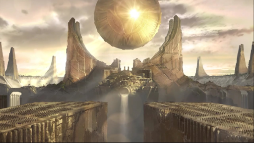

고대 슈리마의 초월한 마법사 제라스는 신비의 에너지가 석관의 파편에 둘러싸인 형상을 하고 있다.
그는 사막 아래의 고대 감옥 속에 수천 년 동안 갇혀 있다가 슈리마 제국의 부활과 함께 자유의 몸이 되었다.
막강한 힘을 손에 넣은 제라스는 응당 자신의 것이라
여기는 것들을 찬탈하고 신흥 문명 정복으로 자신만의 제국을 세우고자 광기의 질주를 시작한다.
수천년 전, 제라스는 슈리마의 이름 없는 노예 소년이었다.
포로로 붙잡힌 학자 부부의 아들로 태어난 그에게 주어진 미래는
끝없는 노역뿐이었다. 어머니는 소년에게 수와 글을 가르쳤고, 아버지는 역사 속 이야기를 들려 주었다.
그렇게나마 쌓은 지식으로 아들이 더 나은 인생을 살 수 있길 바라는 마음이었다. 소년은 여느 노예들처럼 굽은 등에 채찍을
맞으며 일하는 삶을 살지 않겠다고 다짐했다.
어느 날, 아버지는 황제의 애마를 위한 기념비 건립을 앞두고 굴착 작업에 참여했다가 사고를 당했고, 그 자리에 방치되어
목숨을 잃고 말았다. 소년이 같은 운명을 겪게 될까 걱정한 어머니는 저명한 고분 건축가에게 소년을 도제로 받아달라고
간청했다. 처음엔 꺼려하던 건축가도 소년의 세심한 관찰력과 천부적인 수학적, 언어적 재능을 확인하고는 그 기량에 감탄하며
소년을 받아 들였다. 그 이후로 소년은 다시는 어머니를 보지 못했다.
소년은 하나를 가르치면 열을 알았고, 건축가는 필요한 문서와 도면을 찾아오도록 소년을 거의 매일 같이 나서스 대도서관으로
보냈다. 여느 때처럼 도서관에서 문서를 찾던 중, 소년은 황제의 천덕꾸러기 막내 아들 아지르를 만났다. 아지르는 고대 문서의
어려운 구절을 읽어내려 애를 쓰고 있었다. 황족에게 말을 거는 것은 죽음을 자청하는 일이란 사실을 알면서도 소년은
어린 황자에게 다가가 복잡한 문법을 풀어주었다. 그 순간, 작은 우정이 싹을 틔웠고 몇 달 만에 두 소년은 막역한 사이가 되었다.
노예는 이름을 갖는 것이 금지되어 있었지만 아지르는 소년에게 제라스라는 이름을 지어주었다. 비록 둘 사이에서만 불렸지만
‘함께 나누는 사람’이라는 의미가 담긴 뜻깊은 이름이었다. 아지르는 제라스가 황실의 노예로 들어오도록 손을 쓴 후 그를
자신의 직속 신하로 임명했다. 학구열로 뭉쳐진 두 소년은 도서관에서 함께 글을 읽으며 친형제만큼이나 사이가 돈독해졌다.
아지르의 곁에서 제라스는 문화, 권력, 지식의 현장을 생생하게 관찰할 수 있었고, 그로부터 배울 수 있는 모든 것을 배워 갔다.
그리고 아지르가 언젠가 자신을 해방시켜 줄 것이라는 위험한 꿈까지 꾸게 되었다.
어느 날, 연간 시찰에 나선 황제 일행은 유명한 오아시스 근처에서 하룻밤을 묵다가 암살단의 기습을 받았다. 아지르는 제라스가
자객의 공격을 막아준 덕에 살아남았지만 형들은 모두 목숨을 잃고 말았다. 그렇게 아지르는 뜻하지 않게 황위 계승자가 되었다.
노예 신분인 제라스는 아지르를 구한 것에 대해 아무런 보상을 바랄 수 없었지만, 아지르는 언젠가 그를 꼭 형제로 명하겠다고
약속해 주었다.
황제는 오아시스 사건에 대한 보복 조치를 수년에 걸쳐 단행하면서 온 제국을 공포의 도가니로 몰아 넣었다. 황실의 역사와
정치구도에 밝은 제라스는 아지르의 목숨이 위험하다는 사실을 어렵지 않게 알아챘다. 황제는 총애하던 다른 황자들 대신
아지르가 살아남은 것을 원망했고, 그런 상황에서 황세자 자리는 아무런 의미를 갖지 못했다. 더 급한 문제는 황후가 후사를
더 볼 수 있을 정도로 젊고, 그동안에도 건강한 아들을 여럿 출산했다는 사실이었다. 십중팔구 또 다른 황자가 태어날 것이었고,
그렇게 되면 아지르의 죽음은 시간문제일 뿐이었다.
학자로서의 근본을 타고난 아지르에게 제라스는 살아남기 위해선 무예를 배워야 한다고 조언했다. 아지르는 제라스의 뜻을
따랐고, 충언에 대한 보답으로 그의 입지를 승격시키며 공부를 계속해 나가라고 독려했다. 두 사람 모두 재능이 탁월했지만,
지식에 대한 제라스의 열정과 습득력은 유독 특별했다. 제라스는 아지르의 오른팔 자리에까지 올랐다. 일개 노예에게 그런 자리가
주어진 것은 처음 있는 일이었다. 오른팔로서 제라스는 아지르에게 상당한 영향(혹자는 ‘지나친 영향’이라고도 했다)을 미쳤고,
아지르는 제라스의 판단에 더욱 더 의지하기 시작했다.
제라스는 지식을 쌓는 데에 온갖 노력을 기울였다. 비용이나 출처 따위는 문제가 되지 않았다. 폐쇄된 도서관의 문을 열고 잊혀진
서고에 들어가 모래 깊숙이 묻혀 있는 신비주의자들에 대해 공부했다. 제라스는 그렇게 지식과 야심을 빠르게 키워 나갔다.
걷잡을 수 없을 만큼 빠르게… 불미스러운 곳들을 여기저기 뒤지고 다닌다고 뒤에서 수근거리는 목소리가 들리기도 했다.
그런 수근거림이 신경을 거스를 정도가 되면 제라스는 수단과 방법을 가리지 않고 문제의 목소리를 없애버렸다. 아지르는
제라스에 대한 세간의 의혹에 대해 함구했고, 제라스는 이를 자신의 방식에 대한 암묵적인 찬성이라고 여겼다.
그렇게 수년이 흐르는 동안 제라스는 어둠의 수단을 이용해 황후의 출산을 막고 있었다. 마법을 배우기 시작한 후부터 그는
황후가 잉태를 할 때마다 마력으로 태아를 없앴다. 또 다른 황자가 태어나지만 않으면 아지르가 안전할 것이란 생각이었다.
황후가 저주에 걸렸다는 소문이 돌았을 때 제라스는 다시는 의혹이 불거지지 않도록 손을 썼고, 의심의 목소리를 낸 자들은
흔적도 없이 사라져 갔다. 아지르를 살리기 위해선 손에 피를 묻힐 수밖에 없다고 애써 합리화했지만, 노예 신분을 벗어나려는
그의 갈망은 자신만의 권력을 향한 불타는 야욕으로 변해가고 있었다.
황후의 산파들을 좌절시키려는 제라스의 갖은 노력에도 불구하고 슈리마에 새로운 황자가 태어났다. 그날 밤, 제라스는 그간
갈고 닦은 마술을 이용해 사막 깊은 곳으로부터 자연의 영혼을 소환하여 무시무시한 폭풍을 일으켰다. 그리고 황후의 처소에
연달아 벼락을 내려 황후와 갓 태어난 아기를 불길 속에서 죽게 했다. 황제는 서둘러 황후를 찾아 왔다가 두 손에서 마력을
뿜어내고 있는 제라스를 맞닥뜨렸다. 황제의 근위대가 제라스를 공격했지만 제라스는 황제와 근위병 모두를 불길 속에 가두어
버렸다. 제라스는 이들의 죽음을 속국의 마법사들의 탓으로 돌렸고, 아지르는 황위에 오르자마자 해당 속국에 잔인한 보복 조치를
내렸다.
황제가 되어서도 아지르는 이름 없는 노예였던 제라스를 늘 곁에 두었다. 제라스는 이 순간을 오랫동안 기다려 왔고, 아지르가
자신을 형제로 명하기에 앞서 슈리마의 노예 제도에 종지부를 찍어 줄 것이라 기대했다. 하지만 아지르는 영토 확장에만 관심이
있을 뿐, 노예제 폐지에 대한 제라스의 의견은 듣는 체도 하지 않았다. 제라스는 이 또한 슈리마의 도덕적 부패를 보여주는 한
단면이라 생각했고, 약속을 져버린 아지르의 행태에 분노를 느꼈다. 아지르는 제라스에게 미천한 근본을 잊었냐고 화를 내며
선을 넘지 말라고 경고했다. 제라스는 아지르의 결정을 받아들이는 듯 고개를 숙였지만, 그의 마음을 비추던 숭고한 불씨는
그날로 꺼져 버렸다. 제라스는 영토 확장을 지속해 나가는 아지르를 시종일관 곁에서 도왔지만, 그의 모든 행동 뒤에는 제국 내
자신의 영향력을 키우기 위한 계략이 숨어 있었다. 제국을 찬탈하는 일은 결코 쉽지 않을 것이기에 그는 더 큰 힘이 필요했다.
레넥톤의 초월에 대한 유명한 전설을 살펴보면 태양의 사제단의 선택 없이도 필멸자의 초월이 가능하다는 사실을 알 수 있었다.
이에 따라 제라스는 초월의 힘을 가로채기 위한 계획을 세웠다. 태양 원판에 설 수 있었던 노예는 여태껏 아무도 없었기에 그는
아지르를 이용하기로 했다. 그는 아지르의 허영심과 자만심을 부추기면서, 전세계를 아우르는 대제국을 건설하라는 허황된 꿈을
심어주었다. 제국의 역사 속 영웅들처럼 초월체로 다시 태어나지 않고서는 이룰 수 없는 꿈이었다. 제라스의 끈질긴 설득은
오래지 않아 결실을 맺었다. 아지르가 초월 의식을 치르겠다고 발표한 것이다. 이제 자신도 나서스, 레넥톤과 어깨를 나란히 하는
초월체가 될 자격을 충분히 갖추었다고 아지르는 거만하게 선언했다. 태양의 사제단이 저항했지만 기고만장한 아지르는 고문과
처형으로 대응하겠다며 복종을 명령했다.
마침내 의식의 날이 밝았고, 아지르는 제라스와 함께 초월의 제단으로 향했다. 제라스는 살아있는 불덩이를 가두어 놓은 마법
석관의 봉인을 일부러 깨뜨리고는 문제를 해결해 달라고 나서스와 레넥톤을 보냈다. 불덩이 괴물이 석관을 탈출했을 때 제압할
수 있는 전사는 이 두 형제뿐이었다. 그렇게 제라스는 자신의 음모에서 아지르를 구해줄 수 있는 두 초월체를 멀리 보내 버렸다.
아지르는 태양 원판 아래에 우뚝 섰다. 그런데 사제단이 의식을 시작하려는 찰나, 예기치 못한 일이 펼쳐졌다. 아지르가 제라스를
향해 몸을 돌려 노예 해방을 선언한 것이다. 제라스뿐 아니라 온 나라의 모든 노예가 노역의 굴레에서 벗어나게 되었다. 아지르는
제라스를 품에 꼭 안고 영원한 형제로 명했다. 제라스는 말을 잇지 못했다. 그토록 바라던 것을 모두 얻었지만, 자신의 계획을
성공시키려면 아지르가 죽어야만 했다. 그리고 그 어떤 것도 그의 계획을 막을 수는 없었다. 이미 많은 부분이 진행되고 있었고,
이제 와서 돌이키기엔 그동안 치른 희생이 너무도 컸다. 심장을 단단히 감쌌던 증오가 조금씩 녹아들면서 돌이키고도 싶어졌지만
이미 때는 늦은 후였다. 다가오는 죽음을 알지 못하는 아지르는 사제단이 의식을 시작하고 태양의 경이로운 힘을 끌어내리자
몸을 돌렸다.
분노와 비탄이 뒤섞인 절규를 내지르며 제라스는 제단 위의 아지르를 폭발시켰고, 까만 재로 스러져 가는 옛 친구의 모습을 보며
눈물을 흘렸다. 아지르가 있던 자리에 서자 태양빛이 온몸을 가득 채우며 그의 피와 살을 초월체의 몸으로 만들기 시작했다.
하지만 의식의 힘은 그를 위한 것이 아니었고, 아지르에 대한 배반은 참혹한 결과를 불러 일으켰다. 태양의 무한한 힘은 사원을
전소시키고 도시를 초토화시키며 슈리마 제국의 파멸을 초래했다. 사막이 도시를 집어 삼키는 동안 백성들은 거센 불길에
휩싸였다. 태양 원판이 추락했고, 수백년 역사의 제국은 하루 만에 사라져 버렸다.
도시가 불타는 와중에도 제라스는 태양의 사제들에게 마법을 걸어 초월 의식을 끝내지 못하게 했다. 그의 몸을 가득 채운 방대한
에너지는 어둠의 마력과 결합해 어마어마한 힘이 되었다. 태양의 힘이 몸 속으로 들어오자 필멸의 육신이 사라졌고, 제라스는
신비한 힘으로 가득 찬 빛의 소용돌이가 되었다.
제라스의 배반이 드러나자 레넥톤과 나서스는 도시를 흔드는 마력의 진원지로 서둘러 향했다. 그들의 손에는 꺼지지 않는
불덩이의 영혼을 담은 마법 석관이 들려 있었다. 초월한 두 형제가 초월의 제단에 가까스로 다다랐을 때 제라스는 도시를
집어삼키고 있는 죽음의 불길로부터 내려오고 있었다. 그들은 이제 막 초월체가 된 마법사에게 반격을 할 틈을 주지 않았다.
에너지로 응축된 그의 몸을 석관에 가둔 뒤, 저주의 쇠사슬과 감금의 주술로 다시 한 번 굳게 봉인시켰다.
그러나 그것만으론 충분하지 않았다. 제라스는 필멸자 시절에도 상당한 힘을 지니고 있었고, 이 힘은 초월체로서의 능력과
결합되어 불사의 괴력이 되었다. 그는 석관을 부수고 파편과 쇠사슬을 몸에 지닌 채 일어섰다. 레넥톤과 나서스는 그에게 몸을
던졌지만 아무리 힘을 모아도 신생 초월체인 그의 위력을 꺾을 수는 없었다. 치열한 접전이 이어지자 무너지던 도시가 다시 한 번
흔들렸고, 아직 모래 속으로 가라 앉지 않은 잔해마저 아스러졌다. 두 형제는 황제의 피만으로 열 수 있는 슈리마 최대 고분
‘황제의 능’으로 제라스를 끌고 갔다. 레넥톤은 제라스를 안으로 끌고 들어가 나서스에게 입구를 봉하라고 외쳤다. 나서스는
참담한 심정으로 동생의 뜻을 따랐다. 그것이 제라스의 탈출을 막을 유일한 방법이었기에… 찬란했던 슈리마의 문명이 붕괴되는
동안 레넥톤과 제라스는 영겁의 어둠 속에 갇힌 채 끝나지 않을 싸움을 이어갔다.
얼마나 시간이 흘렀을까. 천하의 레넥톤도 기력이 쇠하기 시작했다. 그는 제라스의 공격에 점점 약해지고 있었다. 제라스가
지어낸 악랄한 거짓말과 환각은 그의 정신을 뒤틀었다. 이제 그에게 나서스는 제라스가 꾸며낸 대로 오래 전 자신을 버린 비열한
형이었다.
오랜 세월이 흐른 뒤, 시비르와 카시오페아가 모래 사막 아래에서 ‘황제의 능’을 발견하고 봉인을 해제했을 때 제라스와 레넥톤은
모래와 잔해의 폭발과 함께 자유의 몸이 되었다. 기억이 왜곡된 레넥톤은 야생 짐승처럼 변해 있었다. 그는 어딘가에 아직 형이
살아 있다는 것을 감지하고는 무너진 고분을 뛰쳐나갔다. 전설 속에서 사라졌던 슈리마가 되살아나 사막 모래 위로 장엄하게
모습을 드러내자 제라스는 오래 전 죽은 줄만 알았던 또 다른 영혼이 부활하는 것을 느꼈다. ‘아지르!’ 그 또한 초월체가 되어
있었다. 제라스는 운명을 직감했다. 둘 중 한 쪽이 살아 있는 한 그 어느 쪽도 평온을 누리지 못할 기구한 운명을.
잃었던 힘을 되찾고 지난 수천 년 동안 세상이 어떻게 변했는지 확인하고자 제라스는 사막의 심장부를 찾았다. 빼앗겼던 힘이
빠르게 돌아왔고, 세상은 무서운 새로운 신을 숭배할 준비가 된 필멸자로 가득했다. 이제 남은 건 정복뿐이었다.
새로운 힘을 얻은 제라스는 더 이상 이름 없는 노예 소년이 아니었지만 그럼에도 여전히 사슬에 묶여 있었다. 잊혀지지 않은
과거의 그 사슬에…

그는 언제나처럼 자신의 모든 것을 바쳤으나, 그의 임무와 희생을 기억하는 자는 거의 존재하지 않았다.
그리고 그 모든 것의 결실이 바로 이 초월 의식이라는 기괴한 가면 놀음이었다.
짐은 초월할 것이다! 황제의 선언이 왕국에 울려 퍼지자 제라스는 심한 모욕감에 사로잡혔다.
초월한다고! 비천한 우리들은 부서진 돌덩이에 매여 시간의 사막에 휩쓸릴 텐데? 안 된다. 더 이상은, 다시는, 절대!
선택받은 황금 지배자들이 태양의 품에 안겨 신이 되는 일은 없을 것이다.
한 노예가 해낼 것이다.
평범한 노예, 먼 옛적 사막에서 고귀한 핏줄의 아이를 구해주고 말았던 그 불운한 소년이.
노예들은 결코 자유를 얻을 수 없었다.
초월한 존재들이 뼈와 살을 뚫고 영혼과 마음조차 훤히 들여다보며 역심을 품은 자들을 가려낼 수 있었기에,
자유라는 말을 머릿속에 떠올린 것만으로도 노예는 죽음을 당할 수 있었다.
그러나 막의 변덕으로부터 어린 황자를 구해낸 제라스는 직접 황자에게서 자유를 약속받았다.
황금 태양 아지르는 자신을 구해준 소년을 친구로 삼고, 자유를 주리라고 서약했다.
그러나 아지르의 서약은 아직도 지켜지지 않았다. 황실의 자손으로 자란 아이가 별생각 없이 내뱉은 약속 때문에,
제라스의 인생은 극심한 희망과 고통으로 뒤섞인 고문의 세월이 되었다.
생각해보라! 아지르가 어떻게 수천 년 된 규범을 거스를 수 있겠는가? 그가 어떻게 전통을, 자신의 아버지를,
운명을 거스를 수 있었겠는가?결국, 젊은 황제는 약속을 지키지 않은 대가로 모든 것을 잃게 될 것이다.
물론 아지르는 제라스에게 많은 것을 베풀어 왔다.신분을 상승시켰으며, 수준 높은 교육을 제공했고,
그를 자신의 른팔로 여기기도 했다. 하지만 결코 자유를 허락하지는 않았다.
제라스의 성품과 재능은 지켜지지 않는 약속 앞에서 점차 왜곡되었다.어째서, 내 삶의 주인은 내가 아니라 저 사람인가?
악에 받친 제라스는 황제의 모든 것을 빼앗기로 했다. 제국과 불멸을 찬탈할 것이다.
가장 순수한, 최상의 자유를 만끽하고 말 것이다!
결전의 그 날. 제라스는 슈리마의 수호자를 자처하는 무능력한 근위대 병졸들과 함께 황제의 뒤를 따랐다.
평소처럼 공손한 태도로, 불쾌할 정도로 거창하게 꾸며진 초월의 제단을 향해 한 발 한 발 계단을 올랐다.
가슴 깊은 곳에서 불현듯 유쾌한 감정이 솟아오르기 시작했다. 이것이 환희인가? 복수는 환희를 불러오는가?
제라스는 커다란 충격과 쾌락 속에서 몸이 떨려오는 것을 느꼈다.
바로 그 순간, 내내 제라스를 괴롭혀온 그 주인의 낡아빠진 황금 갑옷이 갑자기 멈추었다.
그리고 돌아섰다. 그리고 제라스를 향해 걸어왔다. 알아차린 건가? 대체 어떻게? 이 자기밖에 모르는 응석받이 꼬마가?
제라스만큼이나 자신의 손을 더럽혀온 이 독선적이고, 사람 좋은 체하는 황제가? 그러나 모두 들통났다 해도
이미 시위를 벗어난 화살을 멈출 수 있는 방법은 없다.
제라스는 모든 만약의 상황에 대비해 두었다.수십 년간 매수하고, 살해하고, 기만하고, 음모를 꾸며왔다.
심지어 저 괴물 같은 나서스와 레넥톤 형제마저 속여, 의식이 치러지는 장소에서 떠나 있도록 했다.
하지만 이런 상황은 생각해 두지 않았다...
황금빛 태양을 상징하는 자, 세계의 어머니인 사막의 총애를 받는 자, 곧 존재를 초월할 불멸의 존재,
슈리마의 황제 아지르가 투구를 벗었다. 자부심 가득한 눈썹과 웃음을 머금은 눈빛을 드러내고,
자신이 가장 신뢰하는, 가장 오래된 친구를 향해 돌아섰다.
황제는 형제에 대한 사랑, 벗에 대한 사랑, 함께 승리하고 함께 패배했던 시련에 대한 사랑, 가족에 대한 사랑, 미래에 대한 사랑, 그리고 마지막으로... 자유에 대한 사랑을 이야기했다.
말이 끝나자마자, 근위대가 무기를 뽑아든 채로 제라스를 둘러싸기 시작했다.
황자는 전부 눈치채고 있었던 것이다. 제라스의 계획은 물거품이 된 것인가?
그러나 이 갑옷 입은 머저리들은 경례를 하고 있었다. 그들에게선 어떤 악의도 찾아볼 수 없었다.
그저 경의를 표하고 있었다. 그를 축하하고 있었다.
그가 자유를 얻은 것을.
그토록 증오했던 자가, 그토록 갈구했던 것을 허락한 것이다.
자유다. 황제는 모든 백성을 해방하였고, 이제 슈리마의 그 누구도 다시는 사슬에 매이지 않을 것이다.
필멸자로서 아지르가 한 마지막 일은 자신의 백성들을 굴레에서 풀어주는 것이었다.
제단의 기반을 흔들 만큼 거대한 함성이 의식에 모여든 군중들로부터 터져 나와, 제라스의 대답을 집어삼켰다.
그것이 어떤 말이었든지 간에. 아지르는 투구를 쓰고 제단을 향해 걸음을 옮겼고, 그의 신하들은 아지르를 신으로 만들기 위한
준비를 진행했다. 물론, 결코 그렇게는 되지 않을 것이다. 제라스는 거석으로 만들어진 태양 원판의 그림자 밑에 서 있었다.
제국을 파멸시킬 운명이 곧 닥쳐올 것임을 그는 알았다.